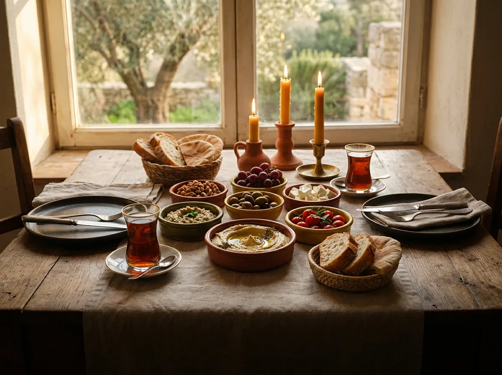

🧭Akıllı etkinlik keşfi
Öne çıkanlar, sana özel öneriler, süzgeçler ve harita ile şehrindeki etkinlikleri anında bul.
🎟️QR bilet
Sana özel QR biletinle kapıda saniyeler içinde giriş yap.
💬Etkinlik sohbeti
Bilet aldığın an etkinliğin sohbetine katıl, yola çıkmadan tanış.
📸Ortak etkinlik albümü
Fotoğraf ve videolar katılımcılara özel albümde toplanır.
🗂️Sekmeli etkinlik sayfası
Özet, Menü, Yolculuk, Sosyal, Şeffaflık ve Kurallar sekmeleriyle aradığın her şey bir dokunuş uzağında.
🍽️Etkinlik menüsü
Fix, set ya da alakart menüyü önceden gör; bilete dahil olanlar ve ayrıca ödenenler açıkça yazar.
🚗Paylaşımlı yolculuk
Aracını paylaş: rota ve buluşma noktaları kendiliğinden çıkar; yakıt türü, tüketim ve fiyatı sen ayarlarsın, hesap açıkça görünür.
🙋Yolculuk talebi
Henüz araç yoksa “Paylaşımlı yolculuk istiyorum” de; araç açılınca haber gelir.
🚙Araçlarım
Ruhsatını okut, aracın bir kez eklensin; okunan bilgiler değiştirilemez, şifreli saklanır, her yolculuğun raporu tutulur.
🪪Doğrulanmış sürücüler
Araç paylaşan herkesin ehliyeti doğrulanır ve her yolculukta geçerliliği kontrol edilir; kimlik doğrulamalı etkinliklerde ehliyet sahibinin kimliği de eşleşir.
🎫QR ile biniş
Yolcu biletini sürücüye okutur, biniş kesinleşir; masraf payı anında sürücüye geçer.
🆘Yolculukta güvenlik
Yolculuğa özel oda (yalnızca şoför ve onaylı yolcular), şoförle birebir sesli arama, gecikme bildirimi ve yönetime konumlu PANİK düğmesi.
✅Şoför onaylı rezervasyon
Talepler ilk gelen ilk sırasıyla şoföre gider, sıranı görürsün; onaylanınca kesinleşir, onaylanmazsa ücretin tamamen iade edilir. Engellediğin kişiler araçlarını göremez.
🧭Adım adım araç paylaşımı
Araç, kalkış, rota, masraf, ücret ve koltuk tek tek sorulur; haritadan buluşma noktası eklersin, sonda tek ekranda özet ve onay.
⚖️Adil ücret paylaşımı
Durağa göre, herkese aynı ya da binen kişi sayısına bölünmüş ücret; kimse yolculuğun toplam masrafından fazlasını ödemez, fark iade edilir.
🧺Getir listesi
Piknik ve kampta ne getireceğini üstlen, bir gün önce hatırlatma al.
⏳Bekleme listesi
Etkinlik doluysa sıraya gir; yer açılınca otomatik katılırsın.
📅Takvime ekle
Etkinliği telefonunun takvimine ekle, bir gün önce hatırlatma gelsin.
⭐Karşılıklı değerlendirme
Etkinlik sonrası katılımcılar birbirini değerlendirir; güvenilir bir topluluk böyle büyür.
💡Etkinlik öner
Aklındaki etkinliği öner, topluluk oylasın, takvime girsin.
🛠️Kendi etkinliğini düzenle
Premium üyeler etkinliğini yapay zekâ sihirbazıyla oluşturup onaya gönderir.
⚡Şimdi HADİ!
Çevrendeki üyelere birkaç saatlik anlık buluşma çağrısı aç.
☕Kahve Eşleşmesi
Rızanla katıl; her hafta ilgi alanların uyan bir üyeyle kahvede tanış.
🎡Etkinlik Çarkı
“Ne yapsak?” diyorsan çarkı çevir, çıkan fikri etkinlik olarak öner.
🖼️Görseller akışı
Fotoğraf ve videoları kaydırarak keşfet.
✍️Yazılar
Kısa yazılarla düşünceni paylaş.
🎬Anlar
90 saniyeye kadar dikey videolar çek ve paylaş.
🎨Gelişmiş düzenleyici
Filtreler, animasyonlu yazılar ve HADİ çıkartma paketleri.
⏰Zamanlanmış gönderi
Gönderini ileri bir saate zamanla, o an kendiliğinden yayınlansın.
🎵Gönderiye müzik
Lisanslı kitaplıktan parça seç, şarkı sözleri fotoğrafının üstünde aksın.
🤩Yüz efektleri
Taç, gözlük, konfeti… Kamerada eğlenceli yüz efektleri dene.
🎈AR Dünya
Kamerada odana 3B balonlar ve hediyeler yerleştir.
✂️Kendi çıkartmanı yap
Fotoğrafından çıkartma oluştur; kesme işlemi telefonunda yapılır.
💡Işığı düzelt
Karanlık fotoğrafın ışığını tek dokunuşla ücretsiz düzelt.
🪄Fotoğraf onarma
Eski fotoğrafları yapay zekâyla onar ya da renklendir.
📲Video olarak dışarıda paylaş
Gönderilerin WhatsApp ve Instagram’a şık kısa videolar olarak gider.
🚀Gönderini tanıt
Daha çok kişiye ulaşmak için gönderine tanıtım yap.
🔍Akıllı arama
Üyeleri, etiketleri, etkinlikleri ve hizmetleri tek kutudan bul.
⭕Story
Müzik, anket, soru ve geri sayım çıkartmalarıyla 24 saatlik story.
💚Yakın arkadaşlar
Story’ni yalnızca yakın arkadaşların görsün.
📌Öne çıkanlar
Süresi dolan story’lerini profilinde kalıcı sergile.
👻Snap
En çok 1, 2 ya da 3 kez açılabilen anlık fotoğraf gönder.
🗒️Notlar
Mesajlar listesinin üstünde 24 saatlik kısa durumunu paylaş.
📣Story’ni öne çıkar
Seni takip etmeyenlerin story şeridinde de görün.
🔴Canlı yayın
Tek dokunuşla görüntülü yayın aç, kullanmadığın süre iade edilir.
🎙️Sesli odalar
Konuşmaya katıl ya da kendi sohbet odanı aç.
✋Söz iste
Dinleyiciler el kaldırır, yayıncı söz verir.
🛡️Yayın moderatörleri
Yayınına moderatör ata; yorum sabitlesinler, odayı düzenlesinler.
🎧Temiz ses
Gürültü ve yankı engelleme; web’de ses efektleri ve arka plan filtreleri.
🤐Küfür koruması
Küfürlü konuşanın mikrofonu otomatik kapanır; ses kaydedilmez.
🎁Canlı hediyeler
Sevdiğin yayıncıya yayın sırasında hediye gönder.
🗣️Sesli mesaj
Yazmak yerine konuş; sesli mesaj gönder.
📍Canlı konum
Buluşmaya giderken konumunu canlı paylaş.
🖼️Galeri paylaşımı
Tek seferde 10 fotoğrafa kadar galeri gönder; isteğinle grupla ya da tek tek göster.
🖌️Göndermeden düzenle
Fotoğrafa çiz, yazı ekle; yüz, plaka ya da adresi pikselleştir.
🏷️Fotoğrafta etiketleme
Sohbet fotoğraflarında arkadaşlarını etiketle; etiketlenen kendi gönderisinde paylaşabilir.
⌛Kaybolan mesajlar
Mesajlar 24 saat, 7 gün ya da 90 gün sonra kendiliğinden silinsin.
😍Mesaj tepkileri
Mesajlara emojiyle tepki ver.
✏️Mesajı düzenle
Gönderdiğin mesajı sonradan düzelt.
📌Mesaj sabitleme
Önemli mesajları sohbetin üstüne sabitle.
🧵Konular görünümü
Kalabalık grupları konu başlıklarına ayırarak oku.
🎲Sohbet oyunları
Sohbetin içinde kelime oyunu, zar turu ve düello oyna.
🤖Sohbet botları
Botlu odalarda karakterler yalnızca odada üye varken konuşur: sohbete katılır, alıntılayarak yanıtlar, güler, emoji ve tepki bırakır; kendi aralarında konuşmaz.
🌅Fotoğraflı duvar kâğıdı
Sohbet balonları seçtiğin fotoğrafın renklerine uyar.
👁️Görüldü bilgisi
Grup ve kanallarda mesajını kaç kişinin gördüğünü bil.
↩️Kaldığın yerden devam
Sohbet son okuduğun yerden açılır; aşağıda kaç mesaj beklediğini görürsün.
🔐Gizli sohbet
Uçtan uca şifreli birebir sohbet; içeriği HADİ sunucuları da göremez.
📢@hepsi duyurusu
Gruptaki herkese tek mesajla bildirim gönder.
⌨️@ ile bahset, Tab ile tamamla
@ yazıp adın başını gir: tek eşleşmede Tab adı hemen yazar; çok kişide Tab ile listede ilerle, Enter ile seç, Esc ile kapat.
🏕️Topluluklar
Kamp, kitap, dalış… İlgi alanına göre topluluğa katıl ya da kendininkini kur.
🧩Hazır şablonlu gruplar
Kitap Kulübü, Koşu, Gezi & Kamp, Mahalle şablonlarıyla hemen grup aç.
📚Kitap kulübü
Ayın kitabını oylayın, sesli kitabı birlikte dinleyin.
📡Kanallar
İlgini çeken kanallara abone ol, duyuruları kaçırma.
🗳️Anketler
Kulüp anketlerine katıl, sonuçları canlı izle; istersen anonim oy ver.
🎭Topluluk takma adı
Her toplulukta farklı bir adla görünebilirsin.
🎂Doğum günleri
Bugün doğanları tek dokunuşla kutla; yaşın hiçbir yerde görünmez.
🔮Fal ve burçlar
Burç yorumu ve günün tarot kartı ücretsiz; kahve falı ve yıldız haritası da var.
🧑🏫Yaşam Koçları
Kariyer, öğrenci, ilişki ve aile konularında yapay zekâ koçlarıyla konuş.
💄Makyaj ve moda asistanı
Makyaj rutini al, dolabını fotoğrafla, kombin önerisi iste.
✈️Seyahat planlayıcı
Gideceğin yere göre gün gün gezi planı çıkar.

🍳Mutfak şefi
Elindeki malzemelerle tarif öner.
🗨️Dil partneri
Yabancı dil pratiği yap.
🎁Hediye fikri
Sevdiğine ne alacağını birlikte bulun.
🛋️Ev dekoru
Odanı fotoğrafla, dekor önerisi al.
💇Saç modeli
Yüz şekline göre saç modeli önerisi al.
📄CV ve mülakat
Özgeçmişini güçlendir, mülakata hazırlan.
🌟Influencer Stüdyosu
Söz duvarı, caps ve “Bu mu O mu” kartları hazırla, içerik takvimini kur.
🎥AI video
Hazır şablon videolarda kendi yüzünle başrole geç.
💱HADİ Finans
Günlük kurlar, bülten, kur alarmları ve finans asistanı.
🀄Okey ve 101
Okey ve 101 Okey; rakip yoksa botla oyna.
🎲Tavla
Klasik tavla keyfi, istediğin an.
🃏Batak, King, Pişti
Kâğıt oyunlarının klasikleri bir arada.
♟️Satranç ve Mangala
Strateji sevenler için.
🔤Günün Kelimesi
Her gün yeni bir kelime bulmacası; sıralamaya gir.
🔢Sudoku ve Kelime Avı
Günlük bulmacalarla zihnini çalıştır.
🏆Canlı bilgi yarışması
Herkesle aynı anda yarış ya da takım kurup oyun gecesine katıl.
🎯Görevler ve seri
Günlük ve haftalık görevlerle XP ve Akçe kazan, serini büyüt.
🐷Kumbara
Akçe’ni vadeye yatır, vade sonunda üstüne ödülle geri al.
📻Benim Radyom
Kulübün lisanslı müzik radyosu; sözleri takip et, emojiyle tepki ver.
🏋️AI Personal Trainer
Hedefine göre program al, animasyonlu hareketlerle antrenman yap.
🥗AI Sağlık Koçu
Su, öğün ve günlük dengen tek ekranda.
😴Uyku takibi
Uykunu kaydet, düzenini gör.
🌬️Nefes ve sakinleşme
Nefes egzersizleri ve SOS sakinleşme anında yanında.
🧘Yoga & pilates
Evde uygulayabileceğin akışlar.
🚭Sigarayı bırak
Canlı sayaçla biriken parayı ve bedenindeki iyileşmeyi gör.
👟Adım yarışı
Arkadaşlarınla grup adım meydan okuması başlat.
📓İyi oluş günlüğü
Ruh hâlini kaydet, kendini daha iyi tanı.
🪑Postür molası
Masa başında mola hatırlatmaları al.
🎨60’tan fazla tema
Sinemadan İznik çinisine; koyu mod ve renk körlüğü dostu temalar.
✨Profil stili
Profiline arka plan, yazı tipi, efekt ve çerçeve seç (Premium).
👥Ayrı profiller
Arkadaşlarına ve iş çevrene ayrı fotoğraf ve biyografi göster.
❓Bana sor
Profilinden soru al, istersen anonim; beğendiğin cevapları sergile.
🧳Seyahat modu
Başka şehre gidince profilinde “Seyahatte” görün.
💼Profesyonel profil
Mesleğini tanıt, randevu ve teklif talepleri al.
⚖️Dijital denge
Günlük kullanım sınırı koy, gece modunu aç, haftalık özetini gör.
🔠Yazı boyutu
Yazıları beş kademede büyüt ya da küçült.
🔗Profilini paylaş
QR kart, story ya da bağlantı olarak paylaş.
🛡️Gizlilik Merkezi
Gizlilik puanını gör; Açık, Dengeli, Gizli ya da Hayalet profil seç.
😶🌫️Yüz bulanıklaştırma
Paylaşmadan önce fotoğraftaki başkalarının yüzlerini bulanıklaştır.
🙈Yüzüm görünmesin
Rıza verirsen yüzün seçtiğin kitle dışında otomatik bulanıklaştırılır.
🆘Güvenli buluşma modu
“Güvende misin?” kontrolü ve PANİK düğmesiyle güvendiğin kişilere haber ver.
🧱Taciz kalkanı
İstersen sana yalnızca kimliği doğrulanmış üyeler ulaşabilsin.
🪪Kimlik doğrulaması
NFC çip ve rehberli yüz çekimiyle doğrula; yüz verin telefonunda işlenir.
🔑İki adımlı doğrulama
Hesabına ikinci bir kilit ekle; yeni cihaz girişlerinde uyarı al.
🤝Güvenilir kişilerle kurtarma
Hesabına erişemezsen güvendiğin kişiler yardım etsin.
📍Konum temizliği
Fotoğraflardaki gizli konum bilgisi yüklenmeden silinir.
🧹Otomatik silme
Mesajlar, arşiv ve destek kayıtları için otomatik silme kur.
📦Verilerini indir
Tüm verilerinin kopyasını al, rıza makbuzlarını gör.
❄️Hesabı dondur
Ara vermek istediğinde hesabını dondur, hazır olunca dön.
💎Elmas
Uygulama içi para birimi; fiyatlara KDV dahildir. Biletler, yolculuk, canlı yayın ve işletme ödemeleri satın aldığın ve canlı yayında topladığın Elmas’la yapılır.
🎁Promosyon Elmas
HADİ kampanyalarla üyelere promosyon Elmas’ı hediye eder; bilet, yolculuk, canlı yayın ve işletme ödemelerinde satın alınan Elmas gibi geçer.
🧑💻Geliştiriciler için HADİ
devs.hadisosyal.com: HADİ’ye bağlanan uygulamalar ve yapay zekâ ajanları için her API ucunun açıklaması, 11 programlama dilinde örnek kod, tarayıcıda deneme alanı ve yerleşik terminal. Uygulamalar yalnızca senin verdiğin izinle çalışır; telefonun, e-postan ve konumun hiçbir uygulamaya verilmez.
🏦Havale ile sipariş
HADİ Web’de Elmas miktarını ya da Premium planını seç, satın al: sana özel açıklama kodu ve kopyalanabilir ödeme bilgileri hazır. Dekontu yükle, otomatik okunsun; siparişin her ekranın üstünde takip edilir, onaylanınca konfetiyle haber verilir.
🪙Akçe
Görevler, oyunlar ve ödüllerle kazanılır; Akçe kabul eden hizmetlerde harcanır.
🔄Akçe Market
Elmas ile Akçe’yi diğer üyelerle takas et.
🧾Şeffaf hareketler
Bütün harcamalarını gör; kullanılmamış Elmas için iade iste.
👑HADİ Premium
İndirimler, profil stili, altın çerçeveli gönderiler ve etkinlik oluşturma; fiyatlara KDV dahildir.
✔️Doğrulanmış hesap
Mavi tik al, story’ni 48 saate uzat.
🎀Hediyeler
Klasik ve 3B hediyeler; bayramlarda sınırlı sayıda sezonluk hediyeler.
❤️Bağış
Onaylı vakıf ve derneklere bağış yap.
⭐Üye abonelikleri
Sevdiğin üreticilere aylık abone ol.
👕HADİ Mağaza
Tişört, kupa ya da kapüşonluyu kendi yazınla tasarla; kargoyla al.
🎧Sesli kitap
Dinlerken okunan kelime ekranda vurgulanır; Türk klasikleri ücretsiz.
🍽️Rezervasyon ve sipariş
İşletmelerden randevu al, sipariş ver: gel-al, masaya, kurye ya da kargo.
🏷️Kampanya ve kuponlar
İşletmelerin indirim, kupon ve damga kartlarından yararlan.
💳Kartla güvenli ödeme
Ödemen, sipariş teslim edilene kadar işletmeye geçmez.
🛵Kurye ol
Kimliğini doğrula, HADİ’de kurye olarak çalış.
🏪İşletme hesabı
İşletmeni HADİ’ye taşı, topluluğa ulaş.
🎓HADİ Akademi
Özellikleri deneyerek öğren; ders ve modüllerde Akçe kazan, rozet topla.
💌Arkadaşını davet et
Arkadaşın ilk etkinliğine gelince ikinize de Akçe.
🎖️Elçi programı
Şehrinde HADİ Elçisi ol, topluluğu büyüt.
🎉Hoş geldin hediyesi
Hesabın açılınca başlangıç Elmas’ı ve Akçe’si cüzdanına yüklenir.
🏅Başarılarını paylaş
Fal, oyun, rozet ve etkinlik kartlarını story olarak paylaş.
🛟HADİ Destek
Sorunu sor; işlemi cevabın altındaki düğmelerle oradan hallet.
📞Sesli destek
Destek’le konuşarak yardım al; temel katman ücretsiz.
👆Bana göster
Gideceğin ekranı rehberli turla adım adım gösterir.
🙋İnsana bağlan
İstersen doğrudan destek ekibinden bir kişiye yaz.
🚨Acil güvenlik bildirimi
Taciz ya da acil durumu hemen ekibe ilet.
🗺️Yol haritası
Fikrini öner, planlanan yenilikleri oyla ve takip et.
Bazı hizmetler Elmas ya da Premium ile kullanılır; ücretler ve kapsam uygulamada her zaman açıkça yazar. Hizmetler zamanla değişebilir.

 HADİ
HADİ